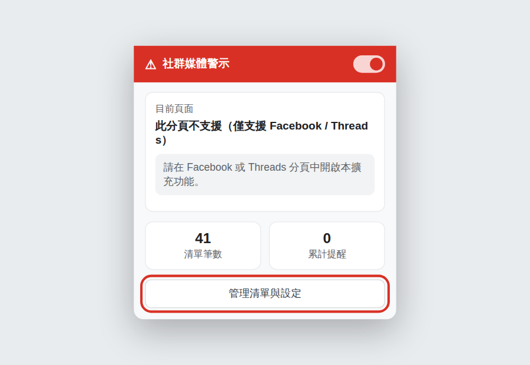
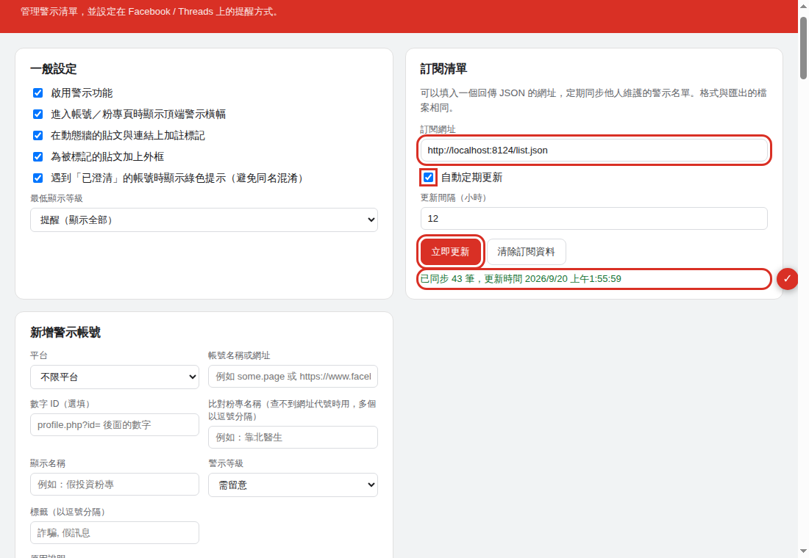
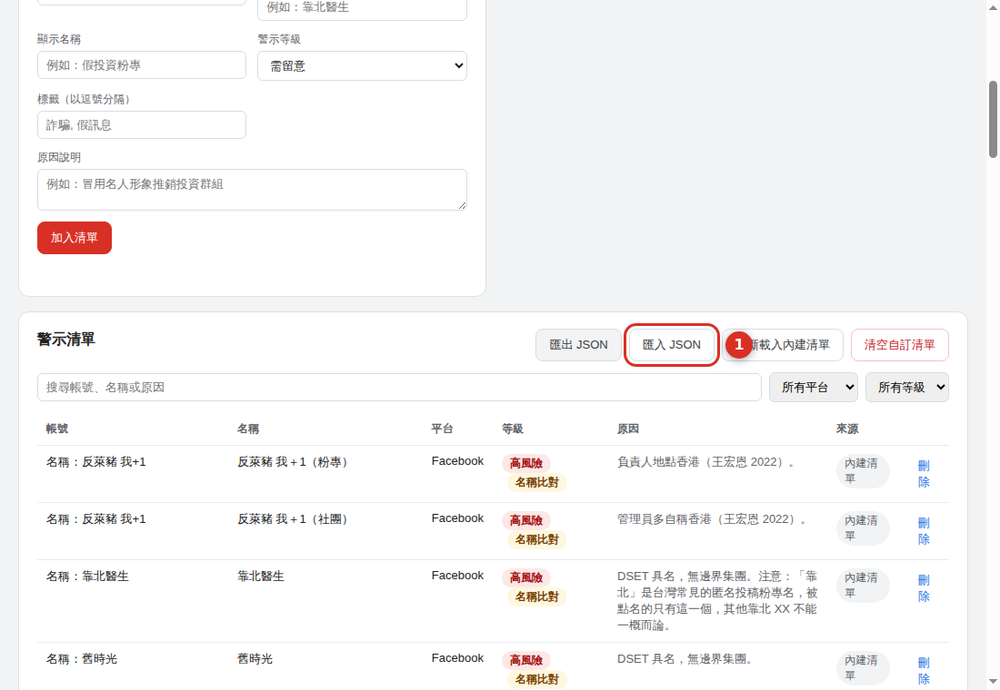

第一步：安裝擴充功能
- 用 Chrome（或 Edge、Brave 等 Chromium 瀏覽器）打開 商店頁面
- 按「加到 Chrome」→「新增擴充功能」
- 安裝完成後，工具列會出現這個圖示：
 紅色圓形、中間一個白色驚嘆號
紅色圓形、中間一個白色驚嘆號
chrome://extensions 把舊的那份移除即可。
安裝後就已經內建一份清單，可以直接開始用。但清單會隨著查證陸續更新， 所以建議接著做第二步。
第二步：訂閱清單（建議）
設定一次，之後清單更新就會自動同步，不用再回來操作。
2-1 複製訂閱網址
2-2 打開設定頁
點工具列的  圖示，按底部的「管理清單與設定」。
圖示，按底部的「管理清單與設定」。

2-3 貼上網址並更新
在右上角的「訂閱清單」區塊：

2-4 確認成功
下方會出現綠色的同步筆數與時間，代表完成了。

替代做法：手動匯入 JSON
不想設定自動更新的話，也可以下載檔案手動匯入。 缺點是之後清單更新時不會自動同步，要再匯入一次。
- 在檢舉頁按「下載 JSON 檔」
- 打開擴充功能的設定頁，捲到「警示清單」區塊
- 按「匯入 JSON」，選擇剛下載的檔案

匯入是累加的，已經存在的項目會自動略過，不會產生重複。
常見問題
訂閱之後，設定頁的清單筆數變兩倍？
正常的。內建清單與訂閱清單是分開存放的（設定頁底部會寫「內建 ○○ 筆、訂閱 ○○ 筆」）， 兩份內容目前相同，所以看起來像兩倍。
不會造成重複警示——內容完全相同的項目在比對時會自動合併， 警示卡只會出現一次。想讓列表清爽一點的話，可以按「清空自訂清單」把內建那份刪掉， 之後完全以訂閱為準。
多久會自動更新一次？
依「更新間隔」的設定，預設 12 小時，最短 30 分鐘。瀏覽器關閉期間不會更新，重新開啟後會補上。
逛 Facebook 沒看到任何警示？
依序檢查：
- 設定頁最上方的「啟用警示功能」有沒有勾選
- 「最低顯示等級」是不是設成「只顯示高風險」，把較低等級的標記濾掉了
- 你瀏覽的粉專是否真的在清單中——可以在設定頁搜尋它的網址代號確認
- 剛安裝完的話，重新整理一下已經開著的 Facebook 分頁
可以用自己的清單嗎？
可以。設定頁能逐筆新增、刪除，也能匯出成 JSON 備份。 你也可以把訂閱網址換成任何你信任的來源，格式相同即可 （格式說明見 list-format.md）。
這份清單可靠嗎？
清單整理自公開報導中被具名的粉專，每一筆都附上依據來源，你可以自己重新查證。 它是參考資料，不是事實認定。收錄標準、查證流程與申訴管道都公開在 檢舉頁上。